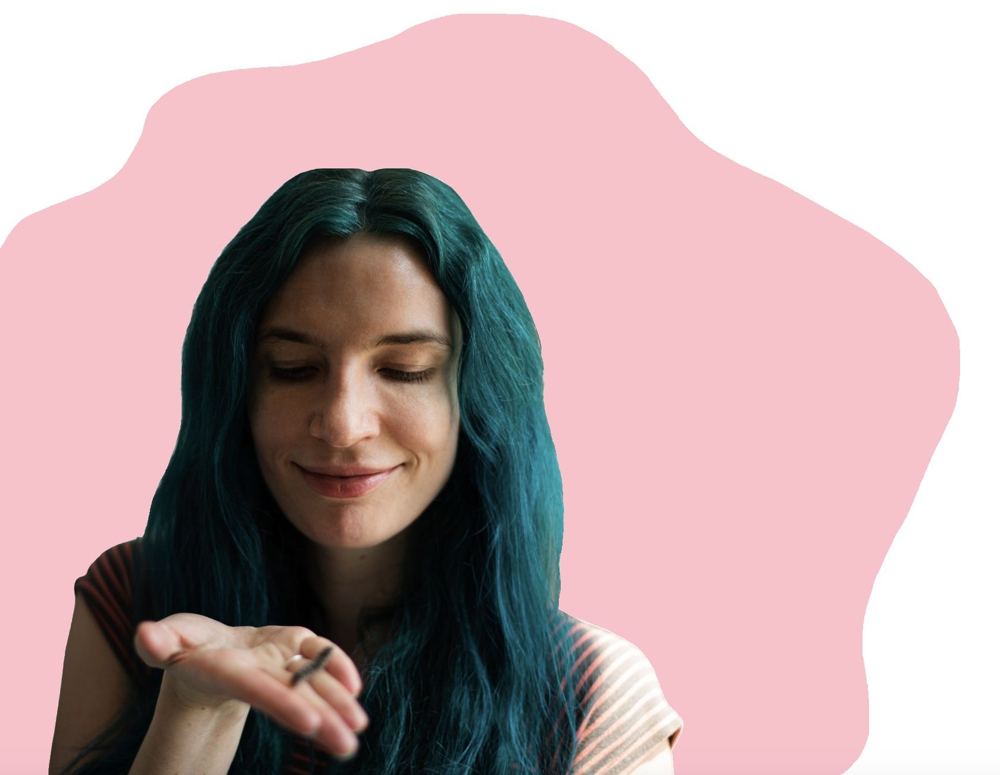

ABOUT

Me with my caterpillar Grubileo. (His siblings Larva Streisand, Grub R. R. Martin, and president George Wormington are off camera.)
QUOTES I LIKE
Refresh for a new one!
Consider the fact that you are now experiencing death, in a curious way. Not being in Paris right now, you know what it is like to be dead in Paris. No lights, no sounds—nothing. The same goes for Timbuktu. In fact, you are dead everywhere—except for one small spot. Just think about how close you are to being dead everywhere!